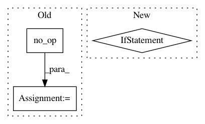

4a471fc393aefa3c5c8e6670a900f93d6ba760cd,thumt/utils/optimize.py,,create_train_op,#Any#Any#Any#Any#,101
Before Change
if params.update_cycle == 1:
zero_variables_op = tf.no_op("zero_variables")
collect_op = tf.no_op("collect_op")
scale_op = tf.no_op("scale_op")
else:
// collect
loss_tensor = _get_or_create_loss_variable()
slot_variables = _replicate_variables(variables)
After Change
name="collect_op")
scale = 1.0 / params.update_cycle
gradients = [scale * (g + s)
for (g, s) in zip(gradients, slot_variables)]
loss = scale * (loss + loss_var)
global_norm = tf.global_norm(gradients)
In pattern: SUPERPATTERN
Frequency: 3
Non-data size: 3
Instances
Project Name: THUNLP-MT/THUMT
Commit Name: 4a471fc393aefa3c5c8e6670a900f93d6ba760cd
Time: 2018-04-08
Author: playinf@stu.xmu.edu.cn
File Name: thumt/utils/optimize.py
Class Name:
Method Name: create_train_op
Project Name: HyperGAN/HyperGAN
Commit Name: 1e339c1a0a186da155c9dc2ab8798075d248dc3e
Time: 2018-11-06
Author: mikkel@255bits.com
File Name: hypergan/optimizers/curl_optimizer.py
Class Name: CurlOptimizer
Method Name: apply_gradients
Project Name: tryolabs/luminoth
Commit Name: 4ec258a2261a943910a34be1b7d53a646f089367
Time: 2018-04-16
Author: joaquin.alori@gmail.com
File Name: luminoth/train.py
Class Name:
Method Name: run